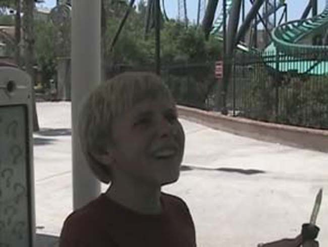
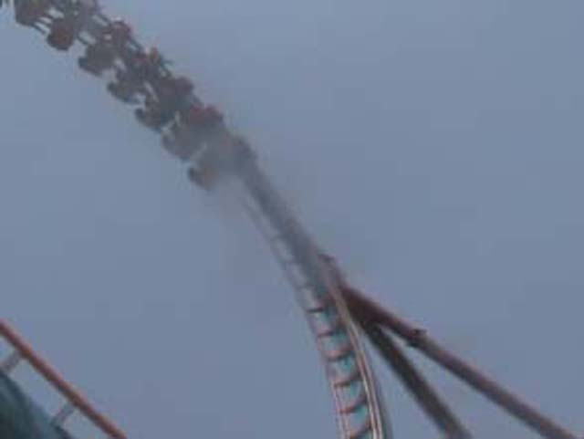
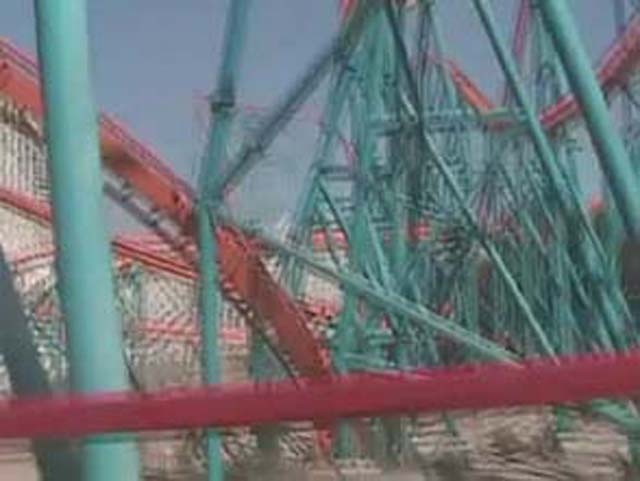
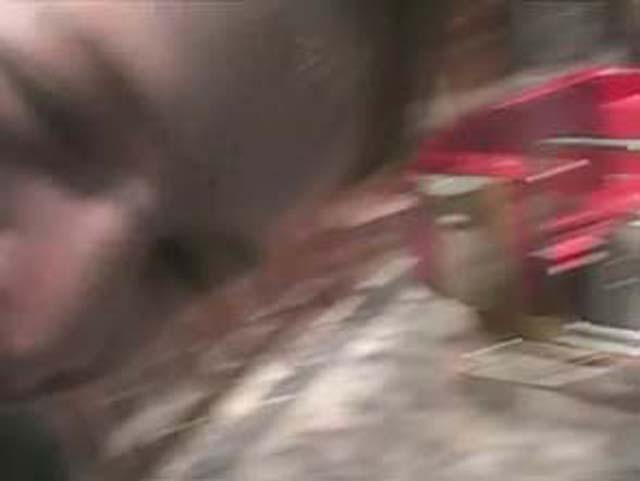
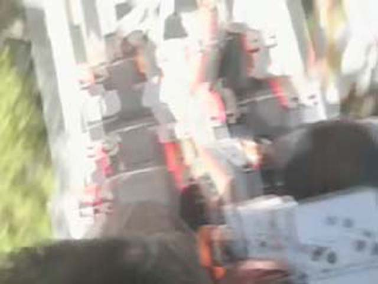
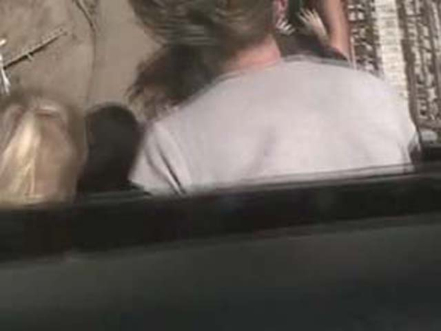
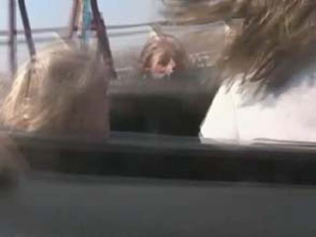
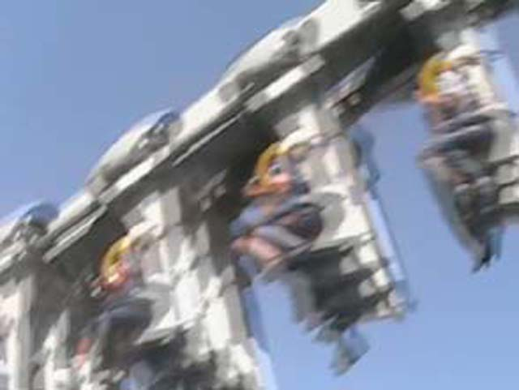
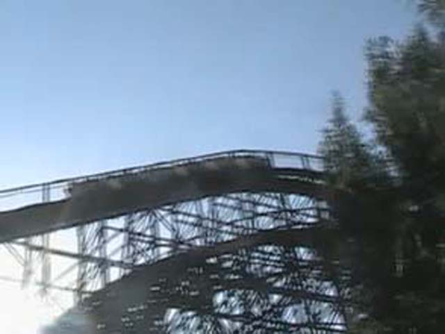
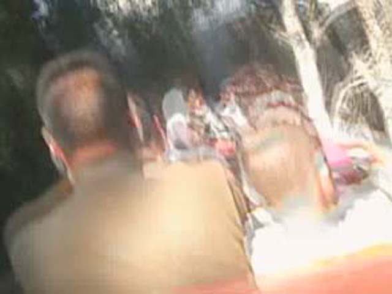

Six Flags Magic Mountain Summer 2005
Andrew loves Mr. Six!
 Heres a photo of Viper. Nuff said.
Heres a photo of Viper. Nuff said.
They took the stairs to Samarui Summit! This has to be for that rumored new coaster!
Why didn't you film me last time we were on Spin out?!?!

Kevin does his Mad Scientist impression!
Yes, I am somewhere under that splash.
More stupid impressions are done on Circus Wheel.
Yay! We got on a coaster today!

And that lovely coaster would happen to be Scream.
 We screamed"Yuck! The Parking Lot is hideous!"while flipping upsidedown twice.
We screamed"Yuck! The Parking Lot is hideous!"while flipping upsidedown twice.

Heres a photo of Goliaths death helix. Nuff said. By the way, we didn't ride Goliath today.
Andrew! Stop being so Happy! I mean it.
Andrew! After this, I'll NEVER let you drive!
Andrew, we already got this credit. WHY are we riding!?!?

OMG! The Balloons spun So SO FAST!!!! It puts the teacups to shame! And that takes ALOT of spinning!
"It hurts to tell whether its Duck Season or Rabbit Season!"
Yo Tweety! Whats Up!

Yes, we are in the worlds first Vertical Loop.
OH MY GOD! SICK! Revelutions Gum seat! YUCK!!!
This guy made a balloon Animal for Celeste.
Celeste, you just recived a present from the Balloon Animal Guy. BE HAPPY!!!!
Yes we waited in that line so Celeste could get her Collosus credit.
Kevin, Stop being a filming nut!

Celeste screams in horror for she has realized that Kevin and Andrew lied to her. AGAIN!

I don't know whats worse?! Tower of Terror at DCA or This!?
 Kevin, you better not put these photos on your website!
Kevin, you better not put these photos on your website!

Yipee! An Inverted coaster WITH forces.
 Once again, Batman saves the day.
Once again, Batman saves the day.

This ride is evil! EVIL!!!!! I can't belive its simalar to the Coney Island Cyclone! Its one of my least favorite coasters EVER! The ride truely sucks!
Andrew and I decided to try the Dive Devil. It was extremly fun. EXPENSIVE, but Extremely intense and fun!
Ninja is a fun Arrow suspended terrain coaster.
Hey Celeste! We're on Ninja! Don't you want to join us!
Um Andrew, what are you doing?

Gold Rusher was back to its sorta smooth friendly self. It eiter has very back whiplash or was running awful during my 13th Birthday Party.
 GROUND HUGGING HELIX!!!!!!
GROUND HUGGING HELIX!!!!!!
Kevin proves to Andrew that he dances better than Mr.Six.
Andrew played Bottlejug and won Scooby Doo. I won Bugs Bunny.
I tried to win us Prizes at Skeeball. I failed.
In the movie, if you hear past the music and ride operators chatting, you can hear Scooby Doo admit he loves me and that he's gay!
Andrew tries to kill me by squishing me to death on Scrambler!
 Today, Viper was rougher than ever before. Which is a real shame since it was fine just 2 weeks ago.
Today, Viper was rougher than ever before. Which is a real shame since it was fine just 2 weeks ago.
Smile! Smile! Kevin! Wave! Wave! Smile! Kevin! Smile!
Home